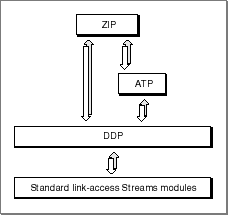

Legacy Document
Important: The information in this document is obsolete and should not be used for new development.
Important: The information in this document is obsolete and should not be used for new development.


About AppleTalk Service Providers
The AppleTalk service provider gives applications access to information and services that are specific to the AppleTalk protocol family. For example, you can obtain zone names and information about the AppleTalk environment for a given machine. The portion of ZIP implemented by AppleTalk service provider functions can query routers for information about a client's own node, the names of all the zones on the node's local network, or the names of all the zones throughout the AppleTalk internet. An AppleTalk router implements the full set of ZIP functions, maintaining a complete mapping of network numbers and zone names in a zone information table that it periodically updates.The mapping observes the following rules:
Figure 14-1 shows how, in providing access to the Zone Information Protocol (ZIP), AppleTalk service providers encompass underlying delivery protocols and link-access STREAMS modules. Because some AppleTalk service provider functions use AppleTalk Transaction Protocol (ATP) packets and DDP, an AppleTalk service provider is considered a client of both ATP and the Datagram Delivery Protocol (DDP).
- Every node on a network belongs to only one zone.
- A nonextended LocalTalk network contains only one zone; all nodes in that network belong to that zone.
- A single zone can include nodes that belong to different networks.
- Each AppleTalk extended network has associated with it a list of the zones to which its nodes can belong.
Figure 14-1 AppleTalk service providers and their underlying delivery mechanism
